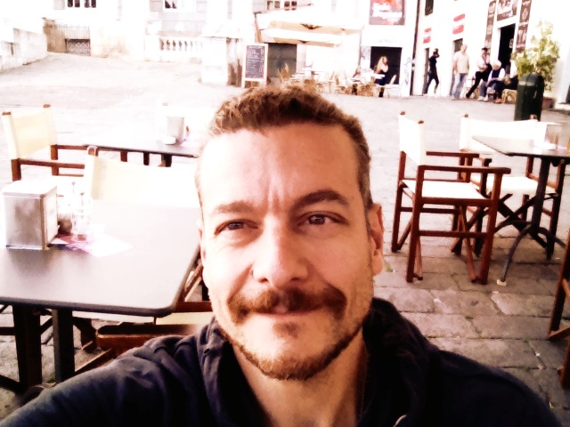
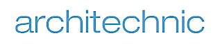

In italiano potreste chiamarci copy (che italiano non è), ghostwriter (idem), editor (..!). Oppure redattori, scrivani, compilatori, canta-storie (ma non conta-frottole), corsivisti, estensori, parolieri, poligrafi, pubblicisti, autori; o persino chiacchieroni, scribacchini, imbrattacarte, pennivendoli, gazze, rodomonti, linguacciuti, guasconi. Carta e inchiostro sono nel nostro dna, e nessun vocabolo ci spaventa. Noi, però, ci sentiamo textplayers. Nella lingua dell’advertising, del marketing, del corporate; nell’idioma del web e dei social, o in quello del brand building, |play| è un verbo che non sta mai fermo, e non assomiglia mai al sé stesso della volta precedente. Si traduce suonare, recitare, giocare, dirigere; con il giusto suffisso diventa modellarsi su qualcosa o far leva su qualcos’altro, sviluppare, svolgere, inventare. Sono solo 26, le lettere dell’alfabeto, ma infinite le combinazioni. Ad ogni vostro progetto, idea, obiettivo strategico o necessità di comunicare, noi sappiamo come dar voce con efficacia, appeal, creatività. Non siamo maghi, magari solo un po’ giocolieri. Voi, però, chiamateci textplayers.
 è nato a Genova nel 1969. Laureato in Scienze Politiche, consegue un PhD in Storia presso il Trinity College di Dublino, città dove vive per due anni. Rientrato in Italia, riprende l’attività di giornalista pubblicista, affiancando all’attività di redazione quella di inviato sportivo.
Da qui - e gli anni passati sui campi di calcio e rugby - nascono i libri Più mi tradisci più ti amo (2003, Fratelli Frilli), Il mago di Ops (2005) e Dizionario amoroso & furioso (2007) per i tipi di DeFerrari, e Ovosapiens (2010, Libero di Scrivere), parto del collettivo letterario AB Nordahl.
Dal 1997 inizia a lavorare nella comunicazione, come account e in seguito creativo e ghostwriter; nel 1999 si sposta a Milano, dove collabora con alcune importanti agenzie di R.P. quali Aida Partners, Aigo ed Eta Meta Research, uno spin-off di Klaus Davi Communication. Nel 2001 è in Fleishman-Hillard, quindi a cimentarsi con adv e viral marketing in Say What?, infine - come editor multilingue - in Ketchum Italia e Nextplora. Il richiamo del mare, tuttavia, si fa sentire.
Nel 2003, perciò, lascia l'ombra della Madunina e crea iCopy, una struttura di comunicazione on-demand con uffici a Genova e Rio de Janeiro: partner provenienti dalle più eterogenee esperienze consentono alla nuova agency di fornire servizi di testo, web e marketing a 360° in italiano, inglese, francese, spagnolo e portoghese, e lasciano al cliente la scelta sull'essere seguito attraverso un accordo di partnership, in outsourcing o tramite un contratto a progetto one-shot.
Dal 2010 iCopy approda sull'isola di Lampedusa, ombelico del Mediterraneo: è qui che nasce 'Capperi!', pocket-guide dell'arcipelago che vanta, oltre a 9mila copie di tiratura annua, il primato di essere l'unica al mondo interamente a km zero. Oggi, all'alba della sua quinta edizione, 'Capperi!' conta una fedele e sempre attiva community twitter, un ampio portfolio di servizi on demand a terra e in mare, e l'organizzazione di Click On Lampedusa, contest foto-subacqueo premiato nella sua prima edizione dalla patrocinio di Canon, e da un già significativo successo artistico e di pubblico.
Nell'autunno 2104, infine, pochi mesi dopo aver festeggiato il suo 10° anniversario, lo staff iCopy inaugura il suo quarto ufficio , incubato nello Smart Lab di Città della Scienza, a Napoli, ed è già alacremente al lavoro sul progetto "jamm'jApp"; focus della nuova sfida, la creazione e valorizzazione di percorsi di viaggio inattesi, dentro e intorno alla capitale del Sud.
While studying for a degree in Political Sciences from University of Genoa, Alberto - once a football goalkeeper and a rugby winger, now eventually a Sports novelist - began his career in journalism in 1991. Afterwards, he lived two years in Dublin, earning a Ph.D. in History from Trinity College.
Back in Italy since 1999, he started working in P.R. as a free-lance copy in Genoa, his hometown, and then moved to Milan. Here, he worked for different Agency such as Aigo and Meta Comunicazione, where he was involved in the press office activities for primary GDO and Tourism brands. In 2001, Alberto joined Fleishman-Hillard and eventually worked as a copywriter for Aida Partners (mainly on Electronics and IT brands) and tasted guerrilla adv and viral marketing in Say What? (on Coca-Cola and any brands of multinational Companies Beiersdorf, Mars, Nestlé and Unilever). Finally, since may 2002 he became part of Ketchum, his tasks including ghostwriting and editing activities for primary worldwide Pharma companies, and Nextplora, here taking charge to edit McDonald's Italia weekly intranet newsletter.
Since autumn 2003, Alberto leads a group of young creative minds in newborn iCopy, an on demand communication structure able to support customers in any kind of editing and copywriting job. Based originally in Milan, and now on three difference seafront spots - Naples, Genoa and Pelagie islands - iCopy is proud to grant tailor made and home delivery service to all his customers, from family business to multinational co.s, local administrations, no-profit boards.
Landed in 2010 on Lampedusa island, here iCopy gave birth and then lovingly feeded 'Capperi!', a pocket guide to enjoy this mediterranean Caribe's best assets. Yearly released in about 8.000 copies, and counting on a neversleeping tripadvisor-like twitter community, "Capperi!" is the sole planet's 'km zero' guide, now partnered by a growing group of tourism professionals, granting to readers a rich bouquet of ground&sea services.
Starting from 2014, more, 'Capperi!' organizes and support Click On Lampedusa, an international underwater photo contest since his debut rewarded by the Canon and NatGeo (amongst many) patronage and a unexpectedly wide audience and critic success.
Click On Lampedusa will be back - even more ambitious - in sept. 2015; meanwhile, starting from oct. 2014, iCopy opens within Naples' Città della Scienza smart lab. New branch first challenge is the jamm'jApp project, focused on the development and sharing of uncommon travel, cultural and gastronomic paths in&out the astonishingly beautiful italian Sud capitol.
Here, and worldwide, You could count on us to be frankly advised and visionaryly supported in any kind (and style) of text-playing job, such as: Product Press Office; Newslettering; Web Design, Content Providing, App Development; Advertising, Brand Identity and Logo; Editing, Multi-language Translation and Proofreading; Corporate Ghostwriting and what-the-hell-ever else you could need. Wearing Mercury’s boots, iCopy guys and dolls could reach you wherever you like, to develop fast, cheap and passionately the words that better fit any your project…
Just ask!
Mission
-
WHO
fondata nel 2003 a Milano, ed oggi attiva a Genova, Lampedusa, Napoli e Rio de Janeiro, iCopy è formata da giovani professionisti della comunicazione. Il nostro staff vanta formazione ed esperienze eterogenee in agenzia, in azienda, nel giornalismo tradizionale e nei new media. Questo ci consente di avere il giusto approccio agli incarichi più diversi. -
WHAT
forniamo consulenza e servizi multilingue ad hoc per ogni esigenza di aziende, istituzioni, agenzie di RP e advertising. In particolare, potete chiederci: ufficio stampa corporate e di prodotto; newsletter e house organ; web design, content providing, sviluppo app; copywriting pubblicitario; brand identity e loghi; ghostwriting corporate e istituzionale; servizi di editing, traduzione e correzione di bozze; progettazione strategica. -
WHEN
grazie alla flessibilità della nostra struttura, siamo in grado di operare su più fronti contemporaneamente, ottimizzando i tempi di esecuzione e consegna. Una puntualità che, per noi, fa rima con creatività ed efficacia del messaggio. In una parola (anzi due), customer satisfaction.
-
WHERE
iCopy è all'interno dello Smart Lab di Città della Scienza, Napoli, e a Genova, Lampedusa, Rio, ma possiamo raggiungervi anche a Timbuctu, Atlantide, Gotham City, Fandònjia. O dove volete voi. -
WHY
per diventare ricchi e famosi, certo, ma soprattutto per passione. Se quello che facciamo non ci piacesse tanto, non lo potremmo fare così bene.
Projects
-
CAPPERI
Forse, è l’unica guida a km zero al mondo: poiché non solo le foto, ma anche tutti i testi e ogni intervento di editing, grafica, stampa sono realizzati sull’isola, quale contributo a un’idea sostenibile di turismo. Capperi! è piccola (100 x 135 mm, meno di una cartolina), è giovane (nata solo nel 2011, con 4.500 copie tirate: ma adesso sono già oltre 20mila) e in oltre centocinquanta pagine a colori - di cui 20 di portfolio fotografico, oltre a mappa e stradario - condensa tutto ciò che serve per “godersi il meglio di Lampedusa”. Il successo della 1a edizione si riflette nella stesura della guide che l'anno seguita, con cadenza annuale. Tra le sue pagine, proposte ad hoc per ogni tasca, periodo dell’anno o filosofia vacanziera. Si passa da una ricca panoramica su spiagge e calette ai consigli su locali e gite; dalla storia dell’arcipelago agli approfondimenti su natura, cinema e musica, cucina, movida, shopping. E sport, naturalmente: oltre a tutte le attività sul e sotto il mare, un'intera sezione è dedicata ai trekking a piedi, con otto percorsi storici e/o naturalistici illustrati passo passo. Per i lettori, anche la possibilità d’essere informati via twitter su previsioni meteo e appuntamenti della serata, ed interagire con la redazione tramite l spagina facebook o la casella email e la info-line dedicate. Dal 2012, alla guida si affianca un ricco bouquet on-demand di servizi turistici a terra e in mare, molti dei quali creati su indicazione proprio dei lettori. Dal 2014, inoltre, Capperi! organizza e promuove nelle acque dell'arcipelago "Click On Lampedusa" contest foto sub di respiro internazionale: un'ampia sezione della guida 2015 - in uscita il prossimo maggio ed ancora più ricca - sarà dedicata proprio dedicata all'evento.
[pulsante twitter@icapperi] [pulsante instagram] [pulsante facebook]
mail to capperi.edit@i-copy.it sms to 338.5615474 -
CLICK ON LAMPEDUSA
..uno scenario da sogno, l’arcipelago delle Pelagie che - situato a metà strada tra le coste siciliane ed africane - racchiude in poche miglia di mare una biodiversità stupefacente. In acque così trasparenti da aver generato la leggenda delle barche volanti, delfini e tartarughe, barracuda e cernie, balenottere, squali e minuscole creature quasi fiabesche popolano grotte segrete e giardini sommersi, canyon e praterie, sifoni, vette e pareti a strapiombo. Sulla terraferma, le Pelagie vantano spiagge di anno in anno proclamate tra le più belle del pianeta, la cucina mescola la tradizione del Sud d’Italia con influenze arabe ed africane, e l’estate dura da maggio a novembre. Pensare a queste isole come ideale set di un contest foto-sub, per tutti questi motivi, non è stato difficile. Dopo il lusinghiero successo - di pubblico e artistico - della prima edizione, dal 20 al 25 settembre 2015, Click On Lampedusa© torna a far sfidare tra loro i diving delle isole ed i loro alfieri, scelti tra le eccellenze della fotografia italiana nel mondo. Faranno corona alla competizione principale, naturalmente, il contest amatoriale e il concorso instagram aperto a chiunque voglia condividere con la web community - da subito e fino al 15 agosto - i propri scatti delle Pelagie. Tra gli award maggiori, infine, debutterà il premio di foto-giornalismo "L'Uomo e il Mare" intitolato al ricordo di Andrea Ghisotti. Particolarmente ricco si preannuncia il calendario collaterale, con workshop fotografici a terra e in mare, open class su temi legati alla conservazione del mare, eventi ludici e gastronomici. Click On Lampedusa©, organizzata - su iniziativa di Alberto Isola e Rocco Cannella - dai diving di Lampedusa e Linosa vedrà il patrocinio di Capperi!, Canon Academy, Comune di Lampedusa e Linosa e A.M.P. Isole Pelagie e la collaborazione di TourGest, SharkSchool Italia, National Geographic, Scubaportal, Ombre dal Fondo, EasyDive. Ancora in via di definizione il panel degli sponsor, nazionali e locali, mentre rimane confermatissimo il legame con la "gemellata" Click On The Mountain di Courmayeur. guarda il trailer dell'evento: https://www.youtube.com/watch?v=zaJV4XBEEGk scopri tutte le foto premiate: https://www.youtube.com/watch?v=R_XpmygccuM leggi l'articolo su NatGeo.it: http://www.nationalgeographic.it/wallpaper/2014/10/08/foto/click_on_lampedusa-2324105/1/?ref=fbng leggi il comunicato stampa di chiusura, edizione 2014 (.pdf) leggi l'articolo su SportWeek di Gazzetta dello Sport (.pdf) [pulsante twitter] [pulsante instagram] [pulsante facebook] aisola.copy@i-copy.it -
JAMM'JAPP
..un progetto nuovo di zecca, proiettato al futuro attraverso l'utilizzo delle più avanzate tecnologie di comunicazione e al tempo stesso rivolto al passato, ai suoi sapori, alle sue malie ed emozioni. Una start-up visionaria e ostinata, romantica e avventurosa insieme, nata a Napoli e per Napoli; un viaggio che vuol condurre a riscoprire e valorizzare i tesori dimenticati della capitale del Sud, e dei suoi dintorni ricchi di storia, storie, suggestioni. Dall'oasi fronte-golfo di Città della Scienza, jamm'aApp muoverà nei prossimi mesi per esplorare e mappare il territorio di Napoli e dintorni, e dare poi vita ad una serie di percorsi di viaggio tematici, da condividere attraverso la progettazione e sviluppo di new media tools, content interattivi e la creazione di un network del quale voi tutti, da subito, siete invitati a fare parte! Se pensate di conoscere qualcosa di bello, inatteso, sorprendente, un aspetto o un luogo di Napoli capace di coinvolgere (valgono tutti i cinque sensi, e tutti i sette peccati capitali!), scriveteci e inviate una foto, un breve testo, un disegno.. ..perché voi tutti siete Napoli e, senza, jamm'jApp non avrebbe senso di esistere. [pulsante twitter] [pulsante instagram] [pulsante facebook] jammjapp@i-copy.it
Portfolio
Corporate & Public

Cultura, Sport & Eventi
Food

GDO